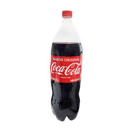

HOY NO FIO, MAÑANA SI
◐ BIENVENIDO VECI ◐
Nᴜᴇꜱᴛʀᴏ Pʀᴏᴅᴜᴄᴛᴏ
Coca-Cola (conocida comúnmente como Coca en muchos países hispanohablantes; en inglés también conocida como Coke) es una bebida azucarada gaseosa vendida a nivel mundial en tiendas, restaurantes y máquinas expendedoras en más de doscientos países o territorios. Es el principal producto de The Coca-Cola Company, de origen estadounidense. En un principio, cuando la inventó el farmacéutico John Pemberton, fue concebida como una bebida medicinal patentada, aunque fue adquirida posteriormente por el empresario Asa Griggs Candler, que hizo de la bebida una de las más consumidas del siglo xx, y del siglo xxi. La compañía produce un concentrado que luego vende a varias empresas embotelladoras licenciadas, las cuales mezclan el concentrado con agua filtrada y edulcorantes para, posteriormente, vender y distribuir la bebida en latas y botellas de plástico o de vidrio en los comercios.
| PRODUCTOS | IMG. PRODUCTO | IMG. PRODUCTO | IMG. PRODUCTO |
|---|---|---|---|
| COCA COLA | 
Coca cola pequeña 250ml $0.35ctvs |
 Coca cola 2l $2.10ctvs |
 Coca cola 3l $3.10ctvs |